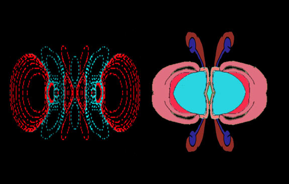
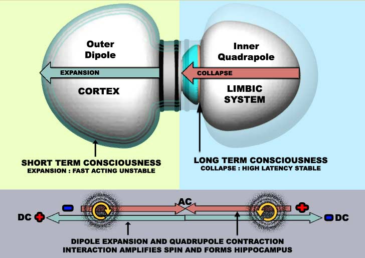
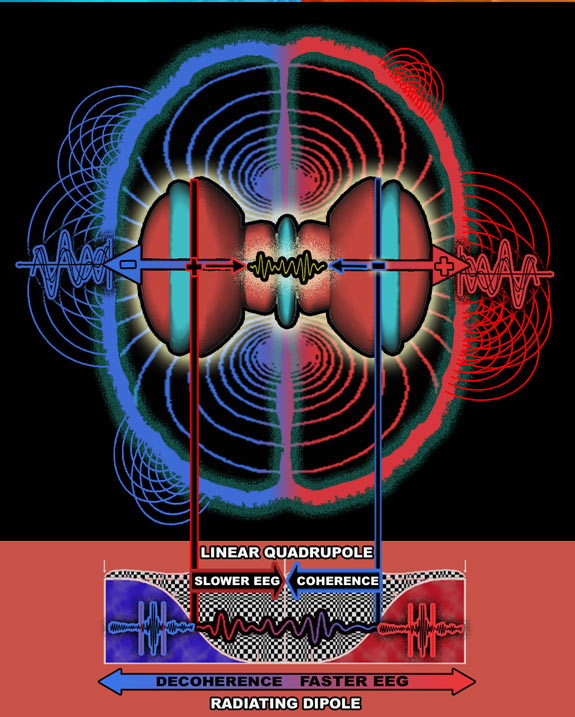

EASY READ THEORY SUMMARY
“Dipole Neurology” proposes that the entire brain has a complex electromagnetic Bio-multipole structure. A linear quadrupole in the limbic system which terminates at the hippocampus, intertwines with a cortical dipole. The two structures integrate along a single axis from left to right temporal lobe .
(NOTE : This simplification of brain complexity, may surprise neuroscientists. who work with brain complexity. Bear in mind, this is a brief easy read summary. Dipole neurology is a fully researched and referenced 250 page project consistent with the known body of knowledge about the brain at it's most technical level. The chapters following this summary as well as the paper derived from them are fully referenced and technical.
A primary aim of this project was to understand the brain by maintaining a focus on unravelling it's physical structure.
1. CORTICAL DIPOLE : Dissections of the brain reveal an obvious dipole structure..
Each of the two cortical hemispheres corresponds with each pole of an electric dipole, in that there is a separation of opposite charges and magnetic poles in the early stages of neurodevelopment. These poles are near each ear with the negative pole being located in the left temporal area and the positive pole being located at the right temporal area. Because a dipole structure is simpler much of the research on this project focuses on evidence to prove that, this is a dipole structure

Is the cortex a dipole ? If not then what else can explain the similarity ?
2. LIMBIC QUADRAPOLE : A linear Quadrapole, where two poles at either axis move to an integrated two pole combination centre, forming an alternating current phase. A linear quadrupole is centrolineal, “a separation of charges moving towards its centre”. This is like an inverted dipole. A dipole has a separation of charges moving out towards it’s poles

Correlation of ventricles with a basic linear quadrapole : Theory predicts charge difference at lateral ventricles choroids plexus. Sodium and chloride ions are produced here. Arrows indicate distribution of charged ions, which will affect distribution of inhibitory or excitatory neuronal populations, consistent with a linear quadrapole: Even though the skull prevents the ventricles from completing their push to form discs, the angle and shape of the remaining pieces is consistent with quadrupole structure
The charge separation in the limbic system eminates in neurodevelopment from either lateral ventricle in the choroid plexus. These charges are poposed to come together in the third ventricle. It’s not being suggested that any processing takes place in these ventricles. Because CSF Enters Astrocytes at lateral ventricles choroids plexus, the charge separation is important to understand the neurochemistry which will arise in limbic processing structures. Its also important to bear in mind that neurons are not proposed to be active at the time net charges are proposed to be coherent in development.

LEFT : As the Quadrupole structure becomes more complex each part can correspond to a facet of the limbic system. Although limbic structure is complex, convoluted by the skull, and biological agendas, it can still be accounted for with quadrupole patterns. RIGHT : Most of the structures of the limbic system have the smooth curves and circular rotations associated with linear quadrapoles.
3. QUADRUPOLE WITHIN A DIPOLE
Because the dipole and linear quadrupole structures are inversions of each other, they combine well to form an interesting system. In the paper and further sections here, it is shown how cortical neurons, receptors, axons and neurotransmitters have chemical properties which derive from the charges of these electromagnetic structures. For this reason the limbic structure is contralateral (reversed) to the cortex in charge and function, otherwise the two structures (dipole and quadrupole) would push each other apart. The pole of the left hemisphere quadrupole is positively charged, and the pole of the right hemisphere dipole is negatively charged, while the pole of the left hemisphere cortical dipole is negatively charged and the pole of the right hemisphere cortical dipole is positively charged. (See section 2 in menu)
At the hippocampus where these two structures integrate charges moving out towards the dipoles poles at the temporal lobes, are caught up with opposite charges trying to move towards the quadrapoles centre. The hippocampus is twisted as a result of two opposing systems with charges travelling in opposite directions. (End of Section 6 for more on this)

TOP RIGHT : representation of the outer dipole. The structure is essentially expansive, resulting in processing and short term memory being pushed to the surface. TOP RIGHT: Representation of the inner Quadrupole. The structure is essentially linear tending towards collapse at the centre. The EEG sent from the septum at the midline controls cortical processes periodically through synchronization and desynchronization. (Section 6) BOTTOM : Inner quadrapole (red lines) and Outer dipole (blue lines). The interaction between the two systems twists the cortex into the limbic system at their meeting point, explaing the hippocampus formation and it's tendency to produce high cortical excitation. (Section 6)
DIPOLE THEORY AND MISSING LINKS IN NEUROSCIENCE
One spin off, in the research, was trying to look for a mechanism which could give rise to charges at the cortex’s proposed brains poles.
I concentrated on the existence of memory capable ferroelectric spin glass fluid components : magnetite, ferrihydrite immersed in foamy lipids covering the entire brain surface. These had been found in a piecemeal manner since the 1930’s, but suprisingly as far as I know has not been investigated for memory in brain function, except to discover that having more is a symptom of alzheimers. (where short term memory goes first). A spin glass allows multiple layers of information within the same medium. Ferroelectric spin fluids would add a hard outer layer to the brain (fluid stiffens when electrical field is applied) capable of short term associations. Ferrofluids offer association capabilities at the resolution of the fluid particles, rather than that of any fundamental particles themselves.
1: Magnetite ferroelectric fluid is proposed to coat the entire brain surface, (Section 4) as brain activity (eeg) increases across brain areas, the fluid stiffens up giving wide area cortical coupling. This is a magnetised ferrofluid at the cortex surface (2.) This fluid experiment is a ferrofluid sealed in a glass plate written to by an electric current. All these required components exist in quantity for a spin glass ferroelectric fluid to coat the cortex. (Section 4) 3: Ferrihydrite is antiferromagnetic and (4) magnetite superparamagnetic, both are bathed in lipids at the brain surface
It should be mentioned that this is a more far flung hypothetical branch of the central theory, however i still needed an explanation for how cortex surface features arise. As well as this a cortical ferrofluid fills out a lot of gaps where researchers have become stuck.
What binds together conscious perception in a “fluid” manner.
Where short term memory is held. M . Banaclocha has been looking for a tape recording mechanism at the brain surface and was the first to propose that magnetite could play a role in brain function.
Why noise and resonance is so important in cortical processes. Ferroelectric Fluid's are going to record eletromagnetic information, and retain them at the resolution of their particles adding noise and magnetic resonance to the binding field.
Why Walter freeman finds cortical ripples flowing across the cortex surface (Neurodynamics) and Jon Joe McFadden believes consciousness is held together at the brains surface.
Why many neuroscientists are currently looking to the brain surface, astrocytes (which CSF can enter) trying to find the physiological correlates of short term memory and consciousness binding.
5. QUANTUM / CLASSICAL PROCESSING "Style" OF A DIPOLE / QUADRUPOLE INTEGRATION
The Dipole Neurology project is not really about a proposal for ferrofluid's. This is just a more hypothetical branch. I set out to prove the brains electromagnetic structure, and most of the information is about that. To fulfil the theory that the brain has a dipole structure, the model essentially requires some amount of charge concentration, albeit brief, located at it’s polar regions, and possibly just restricted to neurodevelopment when the dipole structure forms.
However It would be a missed opportunity to point at that the cortex and limbic system have two diametrically different memory systems which are in a constant state of interaction that resemble a Quantum/Classical style interaction. Quantum computers are being designed around ion traps which use the same linear quadrapole structure of the limbic system to control atoms, while in nanotech scientists are looking at the brief associativel computations offered by the ferroelectric fluids proposed at the cortex surface. Some degree of quantum "style" computation is inevitable with structures like a quadrupole interacting with a dipole system. (See section 6) The Quadrupole with it's periodic clocks eminating from the midline, and a hippocampus which extracts and codifies from the fluid cortex, is in a constant state of superposition. (See section 6) Quantum "style" is the keyword for the limbic system.

INTERACTION BETWEEN THE TWO SYSTEMS
The cortical Dipole (dark red/blue in the image above) poles are the reverse of the Quadrupoles, due to it’s contralateral structure. The dipole is dissipative disordered quickly propogating multiple superpositions of gamma waves which tend to decoherence, and wave activity, towards it’s poles and beyond into the proposed cortical ferrofluid. The thalamocortical and septohippocampal systems sync together making a complete working brain system, which can be measured by the P300 in which A quick reacting and expansive cortex is continually pulled back from the brink of chaos by a thalamus which compresses the result of these cortical superpositional sensory processes into harmonic components, (Section 6) and a hippocampus which indexes the sensory input for memory comparison.
These two systems fit together as an integrated system. A system of opposites far more opposite and in harmony than either the cortex or limbic system alone. They push and pull each other, Expanding and collapsing each others quantum and classical "style" processing agendas. Different researchers point out (700,705,424u) that the differences between cortical and thalamic EEG are linear and non linear respectively, and that having the right balance between these two systems is an essential part of succesfull brain function (705,424u,424q)
The outwards flowing structure of the cortex tends towards expansion, chaos, non linearity and environmental interaction spawning ripples and wave packets at it’s surface. The limbic system is the converse with an inward directing collapsing structure that tends towards linearity, order and control of the cortex through repeated alternating phase locking signals that originate where the two inner ventricles join together. This Expand / Collapse interaction is essential if the brains full computational processes are to be understood
READ THE OTHER CHAPTERS.
I hope you enjoy this. Bear in mind this is a simplification here. The full theory is pretty technical, in line with current neuroscience .I feel the theory has proven to be surprisingly effective at answering a few current mysteries in neuroscience.
BRIEF HISTORY
At the start of this project in draft 1 phase. I did not even know what a neuron looked liked, but had a lot of other questions. I believed that the structural approach would unravel all my questions, and wrote a 16 page booklet called “Dipole neurology : New directions and simplification for the complex brain” . The initial concept of a cortical dipole has survived, although many of the branches from the theory did not.
By draft 2,(2004)
I had 200 pages of disjointed text, and built a 10gig database. Not only was I not so sure about whether it really was a simplification, but I was exhausted from the self taught crash course in neurosciences...However third time lucky…
I sat and did this final draft in autumn 2008. This time everything about the brain system structure appears to have come together. Or has it ? How will you know ? I guess you will just have to read the rest and find out.
|